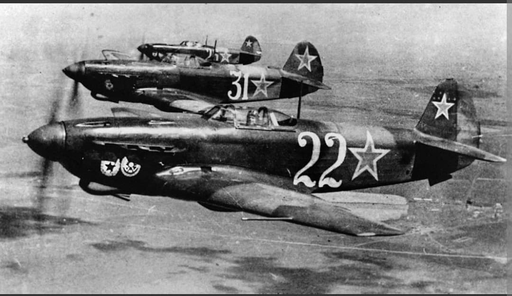
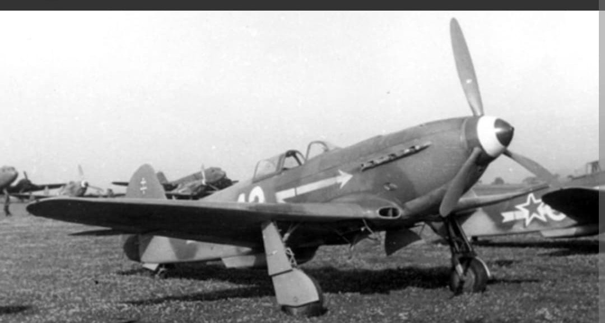
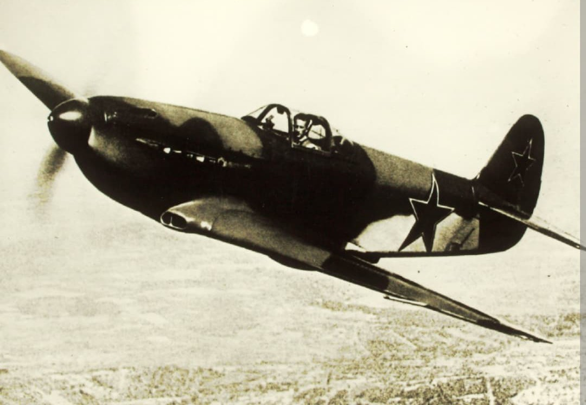

L'apogée de l'ingénierie soviétique : léger, ultrarapide et maître incontesté du combat à basse altitude

Considéré comme l'un des meilleurs chasseurs à hélice de la Seconde Guerre mondiale, le Yakovlev Yak-3 est l'aboutissement ultime de la série inaugurée par le Yak-1. Mis en service au cours de l'été 1944, cet appareil léger et extrêmement manœuvrable a été spécialement conçu pour surpasser les chasseurs allemands Messerschmitt Bf 109 et Focke-Wulf Fw 190 à basse altitude.
Son rapport poids/puissance exceptionnel lui valait une telle supériorité en dogfight que le commandement de la Luftwaffe publia une directive célèbre à l'attention de ses pilotes : « Évitez le combat avec les chasseurs Yakovlev sans monoplan à prise d'air sous le nez en dessous de 5 000 mètres. »
Spécifications de référence du Yakovlev Yak-3 (version de série standard de 1944) :

Contrairement à la tendance des alliés occidentaux qui concevaient des avions plus lourds et mieux armés, Alexandre Yakovlev a fait le choix inverse pour le Yak-3 : **alléger au maximum la cellule et affiner la traînée aérodynamique**.

Le Yak-3 est étroitement lié à l'histoire des pilotes français libres du régiment **Normandie-Niémen**, engagés aux côtés de l'Union soviétique. Lorsque Joseph Staline leur laissa le choix de leur monture en 1944 parmi tous les appareils alliés et soviétiques, les pilotes français choisirent unanimement le Yak-3.
L'as français Marcel Albert qualifia le Yak-3 de meilleur chasseur du théâtre européen à basse altitude. À la fin de la guerre, en signe de reconnaissance pour leurs faits d'armes, le gouvernement soviétique fit don de leurs Yak-3 aux pilotes français, qui rentrèrent au Bourget aux commandes de leurs appareils en juin 1945.
Page du Musée HOP WW2 – Yakovlev Yak-3